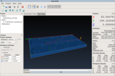
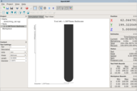
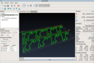
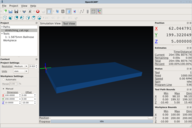

<!DOCTYPE html>
<html lang="en"></html>
<head>
  <meta charset="utf-8">
  <meta http-equiv="X-UA-Compatible" content="IE=edge">
  <meta name="viewport" content="width=device-width, initial-scale=1.0">
  <meta name="description" content="OpenSCAM is an Open-Source software which   simulates 3-axis CNC milling or engraving.  It is a fast, flexible and user   friendly simulation software for the DIY and Open-Source community.   OpenSCAM works on Linux, OS-X and Windows.">
  <meta name="author" content="Joseph Coffland">
  <title>OpenSCAM</title>
  <!-- Main styles-->
  <link rel="stylesheet" href="//netdna.bootstrapcdn.com/bootstrap/3.0.3/css/bootstrap.min.css">
  <link rel="stylesheet" href="//netdna.bootstrapcdn.com/bootstrap/3.0.3/css/bootstrap-theme.min.css">
  <link href="css/shadowbox.css" rel="stylesheet">
  <link href="css/main.css" rel="stylesheet">
  <!-- Webfonts-->
  <link href="http://fonts.googleapis.com/css?family=Open+Sans:400,600,700,300|Open+Sans+Condensed:300,700" rel="stylesheet" type="text/css">
  <!-- HTML5 shim and Respond.js IE8 support of HTML5 elements and media queries-->
  <!--if lt IE 9
  script(src='//oss.maxcdn.com/libs/html5shiv/3.7.0/html5shiv.js')
  script(src='//oss.maxcdn.com/libs/respond.js/1.3.0/respond.min.js')
  
  -->
  <link rel="shortcut icon" href="images/favicon.ico">
</head>
<body>
  <header role="banner" class="navbar navbar-inverse navbar-fixed-top docs-nav"><a id="ribbon" title="Click here to learn how you can support this project." href="#donations"></a><a id="ohloh" href="https://www.ohloh.net/p/openscam?ref=sample" target="_blank"></a>
    <div class="container">
      <div class="navbar-header">
        <button type="button" data-toggle="collapse" data-target=".bs-navbar-collapse" class="navbar-toggle"><span class="sr-only">Toggle navigation</span><span class="icon-bar"></span><span class="icon-bar"></span><span class="icon-bar"></span></button><a href="#" title="Back to top" alt="OpenSCAM" class="navbar-brand"></a>
      </div>
      <nav role="navigation" class="collapse navbar-collapse bs-navbar-collapse">
        <ul class="nav navbar-nav">
          <li><a href="#downloads">Downloads</a></li>
          <li><a href="#tutorial">Tutorial</a></li>
          <li><a href="#user-manual">Users Manual</a></li>
        </ul>
        <ul class="nav navbar-nav navbar-right">
          <li class="dropdown"><a href="#" data-toggle="dropdown" class="dropdown-toggle">GitHub<b class="caret"></b></a>
            <ul class="dropdown-menu">
              <li><a target="_blank" href="https://github.com/CauldronDevelopmentLLC/OpenSCAM">Source Code</a></li>
              <li><a target="_blank" href="https://github.com/CauldronDevelopmentLLC/OpenSCAM/issues?state=open">Open Issues</a></li>
              <li><a target="_blank" href="https://github.com/CauldronDevelopmentLLC/OpenSCAM/issues/new">New Issue</a></li>
            </ul>
          </li>
        </ul>
      </nav>
    </div>
  </header>
  <div id="content" class="docs-header">
    <div class="container">
      <h1></h1>Open-Source Simulation & Computer Aided Machining
    </div>
  </div>
  <div class="banner">
    <div class="container">OpenSCAM version 0.2.0 beta has been released -&nbsp;<strong><a href="https://github.com/CauldronDevelopmentLLC/OpenSCAM/blob/master/CHANGELOG.md" target="_blank">See what's new.</a></strong>
    </div>
  </div>
  <div class="container docs-container">
    <div class="row">
      <div class="col-md-3">
        <div role="complementary" class="sidebar hidden-print">
          <div id="toc">
            <ul class="nav sidenav">
              <li><a href="#about">About</a>
                <ul class="nav">
                  <li><a href="#mission">Mission</a></li>
                </ul>
              </li>
              <li><a href="#downloads">Downloads</a>
                <ul class="nav">
                  <li><a href="#source-code">Source Code</a></li>
                  <li><a href="#previous-releases">Previous Releases</a></li>
                </ul>
              </li>
              <li><a href="#screenshots">Screenshots</a></li>
              <li><a href="#status">Status</a>
                <ul class="nav">
                  <li><a href="#features">Features</a></li>
                  <li><a href="#limitations">Limitations</a></li>
                  <li><a href="#missing-linuxcnc-codes">Missing LinuxCNC Codes</a></li>
                  <li><a href="#future-plans">Future Plans</a></li>
                </ul>
              </li>
              <li><a href="#donations">Donations</a></li>
              <li><a href="#community">Get Involved</a></li>
              <li><a href="#legal">Legal</a></li>
              <li><a href="#contact">Contact</a></li>
            </ul>
          </div>
        </div>
      </div>
      <div role="main" class="col-md-9">
        <div class="docs-section">
          <div class="page-header">
            <h1 id="about">About</h1>
          </div>
          <p>
            OpenSCAM is an
            <a href='http://opensource.org/'>Open-Source</a>
            software which simulates 3-axis
            <a href='http://en.wikipedia.org/wiki/CNC'>CNC</a>
            milling or engraving.  It is a fast, flexible and user
            friendly simulation software for the DIY and Open-Source
            community.  OpenSCAM works on Linux, OS-X and Windows.
          </p>
          <p>
            Being able to simulate is a critical part of creating
            CNC tool paths. Programming a CNC with out a simulator
            is cutting with out measuring; it's both dangerous and
            expensive. With OpenSCAM you can preview the results of
            your cutting operation before you fire up your
            machine. This will save you time and money and open up a
            world of creative possibilities by allowing you to
            rapidly visualize and improve upon designs with out
            wasting material or breaking tools.
          </p>
          <h2 id="mission">Mission</h2>
          <p>
            At home manufacturing is one of the next big technology
            revolutions.  Much like the PC was 30 years ago.  There
            have been major advances in desktop 3D printing
            (e.g. <a href='http://www.makerbot.com/'>Maker Bot</a>)
            yet uptake of desktop CNCs has lagged despite the
            availability of <a href='http://www.ebay.com/sch/?_nkw=cnc+c3040'>cheap
            CNC machines</a>. One of the major reasons for this is a
            lack of Open-Source simulation and
            <a href='http://en.wikipedia.org/wiki/Computer-aided_manufacturing'>CAM</a>
            (3D model to tool path conversion) software. CAM and NC machine simulation
            present some very difficult, yet not insurmountable,
            programming challenges, as is evidenced by 30+ years of
            academic papers on these topics. Whereas, 3D printing
            simulation and tool path generation are much easier.
          </p>
          <p>
            OpenSCAM aims to be a useful CNC simulation platform for the
            DIY and Open-Source community. OpenSCAM should serve the highly
            technical user but remain simple and user friendly enough to
            support less techie types as well. To this end OpenSCAM will
            focus on facilitating specific simulation tasks (i.e. use cases)
            such as engraving and PCB board cutting as well as more advanced
            simulation techniques and programming interfaces.
          </p>
        </div>
        <div class="docs-section">
          <div class="page-header">
            <h1 id="downloads">Downloads</h1>
          </div>
          <h4>Current release: Version 0.2.0 beta</h4>
          <p>Click on the icons below to download OpenSCAM for your platform:</p>
          <p><a title="Windows" href="http://openscam.org/builds/release/openscam/windows-xp-32bit/v0.2/r393-b166/openscam_0.2.0_x86.exe"></a><a title="OS-X" href="http://openscam.org/builds/release/openscam/osx-10.6.4-64bit/v0.2/r393-b23/openscam_0.2.0_x86_64.pkg.zip"></a><a title="32-bit Debian based Linux" href="http://openscam.org/builds/release/openscam/debian-testing-32bit/v0.2/r393-b127/openscam_0.2.0_i386.deb"></a><a title="64-bit Debian based Linux" href="http://openscam.org/builds/release/openscam/debian-testing-64bit/v0.2/r393-b97/openscam_0.2.0_amd64.deb"></a>
          </p>
          <h2 id="source-code">Source Code</h2>
          <p>
            Visit the
            <a href='https://github.com/CauldronDevelopmentLLC/OpenSCAM'>GitHub page</a>
            for information on building the source code.
          </p>
          <h2 id="previous-releases">Previous Releases</h2>
          <p>
            You can browse previous releases here:
            <a href='//openscam.org/releases/'>/releases/</a>
          </p>
          <p>The directory layout is as follows:<strong>/releases/&lt;status&gt;/&lt;mode&gt;/&lt;project&gt;/&lt;build&gt;/&lt;version&gt;</strong></p>
          <table>
            <tr>
              <th>status</th>
              <td>- alpha, beta or public</td>
            </tr>
            <tr>
              <th>mode</th>
              <td>- release or debug</td>
            </tr>
            <tr>
              <th>build</th>
              <td>-<strong>&lt;os&gt;-&lt;os version&gt;-&lt;bits&gt;</strong></td>
            </tr>
            <tr>
              <th>version</th>
              <td>- Major and minor version</td>
            </tr>
          </table>
        </div>
        <div class="docs-section">
          <div class="page-header">
            <h1 id="screenshots">Screenshots</h1>
          </div>
          <p>Click on the screenshots below to see a larger view.</p>
          <p class="screenshots"><a href="images/screenshots/simulation_view.png" rel="shadowbox[Screnshots]"></a><a href="images/screenshots/tool_view.png" rel="shadowbox[Screnshots]"></a><a href="images/screenshots/tool_path_view.png" rel="shadowbox[Screnshots]"></a><a href="images/screenshots/workpiece_view.png" rel="shadowbox[Screnshots]"></a></p>
        </div>
        <div class="docs-section">
          <div class="page-header">
            <h1 id="status">Status</h1>
          </div>
          <p>
            Joseph Coffland of
            <a href='http://cauldrondevelopment.com/'>Cauldron Development LLC</a>,
            began development of OpenSCAM in
            early 2011.  An alpha release of the software was
            first made available to the public in April, 2012.
            OpenSCAM has an active community of users and active
            development continues in to 2014 (and hopefully
            beyond!).  Although there are plans to do much more,
            many of its users find OpenSCAM very useful in its
            current state.  True to the nature of Open-Source
            software, and unlike our commercial counterparts,
            version number increases and claims of software
            stability remain conservative.
          </p>
          <h2 id="features">Features</h2>
          <ul>
            <li>Fast 3-axis cut-workpiece simulation with 3D visualization.</li>
            <li>
              Simulates cylindrical, conical, ballnose, spheroid and snubnose tool
              shapes.
            </li>
            <li>Tool path 3D visualization. </li>
            <li>Multi-threaded rendering can take advantage of multi-processor CPUs.</li>
            <li>GCode parsing, simulation, verification and annotation.</li>
            <li>Supports LinuxCNC (AKA EMC2) O-codes.</li>
            <li>Export cut workpiece to STL file.</li>
            <li>Tool table editing. </li>
            <li>
              Add height probing to 2D GCode files.  Very useful for circuit board
              cutting and metal engraving.
            </li>
            <li>
              2D GCode path optimization. (in progress
              <a href='https://github.com/CauldronDevelopmentLLC/OpenSCAM/issues/11'
              >#11</a>)
            </li>
            <li>Operates in Windows and Linux.</li>
            <li>
              Released under the
              <a href='http://www.gnu.org/licenses/gpl-2.0.html'>GPL v2+ license</a>.
            </li>
          </ul>
          <h2 id="limitations">Limitations</h2>
          <ul>
            <li>
              Simulates only snapshots of the cutting process. See ticket
              <a href='https://github.com/CauldronDevelopmentLLC/OpenSCAM/issues/2'
              >#2</a>.
            </li>
            <li>
              No 5-axis simulation.  See ticket
              <a href='https://github.com/CauldronDevelopmentLLC/OpenSCAM/issues/17'
              >#17</a>.
            </li>
            <li>No Lathe simulation.</li>
            <li>No CAM facilities yet, e.g. 3D model to tool path conversion.</li>
            <li>No CNC machine control, not a replacement for LinuxCNC or MACH3.</li>
            <li>
              Does not yet detect over/under cutting, collisions with
              the tool shaft or fixtures or rapid moves in the material.
            </li>
            <li>Not all of the LinuxCNC G-Code language is implemented, yet.  See below.</li>
          </ul>
          <h2 id="missing-linuxcnc-codes">Missing LinuxCNC Codes</h2>
          <p>
            Features of the LinuxCNC G-Code language which are not yet
            implemented in OpenSCAM:
          </p>
          <ul>
            <li>
              More than 3-axis movements. Ticket
              <a href='https://github.com/CauldronDevelopmentLLC/OpenSCAM/issues/17'
              >#17</a>.
            </li>
            <li>
              Tool offset compensation. Ticket
              <a href='https://github.com/CauldronDevelopmentLLC/OpenSCAM/issues/15'
              >#15</a>.
            </li>
            <li>
              Incremental distance mode. G91. Ticket
              <a href='https://github.com/CauldronDevelopmentLLC/OpenSCAM/issues/42'
              >#42</a>.
            </li>
            <li>
              Plane rotation. G10 L2 R#. Ticket
              <a href='https://github.com/CauldronDevelopmentLLC/OpenSCAM/issues/41'
              >#41</a>.
            </li>
            <li>
              Canned cycles. G73, G76, G81-G89. Ticket
              <a href='https://github.com/CauldronDevelopmentLLC/OpenSCAM/issues/39'
              >#39</a>.
            </li>
            <li>
              Feed modes: inverse time, units per revolution. G93 & G95. Ticket
              <a href='https://github.com/CauldronDevelopmentLLC/OpenSCAM/issues/40'
              >#40</a>. (Only important for estimating run time)
            </li>
            <li>Quadratic B-spline. G5.1. (Experimental in LinuxCNC)</li>
            <li>NURBS. G5.2 & G5.3. (Experimental in LinuxCNC)</li>
            <li>Spindle Constant Surface Speed mode. G96. (Doesn't really apply)</li>
            <li>Spindle-synchronized motion. G33. (Lathe operations are not supported)</li>
            <li>Rigid Tapping. G33.1. (Lathe operations are not supported)</li>
          </ul>
          <p>This list is probably incomplete.</p>
          <p>
            See <a href='http://linuxcnc.org/docs/html/gcode/gcode.html'
            >http://linuxcnc.org/docs/html/gcode/gcode.html</a>
          </p>
          <h2 id="future-plans">Future Plans</h2>
          <p>
            Many features are planed for the future of OpenSCAM.  Much
            of this depends on the availability of developer time and funding.
          </p>
          <p>Here are some of the current ideas:
            <ul>
              <li>Real-time cutting simulation.</li>
              <li>Rotational axis simulation.</li>
              <li>5-axis simulation.</li>
              <li>Lathe simulation.</li>
              <li>Tool collision detection.</li>
              <li>Fixture collision detection.</li>
              <li>Simulate cutting multiple sides of a workpiece.</li>
              <li>Feed and speed calculator.</li>
              <li>Simulation result caching.</li>
              <li>Machine description: speeds, dimensions, axes, etc.</li>
              <li>CNC remote control.</li>
              <li>In application GCode view and edit.</li>
              <li>Workpiece view slicing.</li>
              <li>Multiple workpieces.</li>
              <li>Composite tools.</li>
              <li>Tool library.</li>
              <li>3D printer simulation.</li>
              <li>CAM routines: pocketing, offsetting, arrays, etc.</li>
              <li>Font V-Carving.</li>
              <li>Tool path optimization.</li>
            </ul>
          </p>
        </div>
        <div class="docs-section">
          <div class="page-header">
            <h1 id="donations">Donations</h1>
          </div>
          <p>
            This project is funded through donations.  If you find
            OpenSCAM useful please consider donating $25 or more.
            Your donations will make new features, bug fixes
            and the continued development of this software possible.
          </p>
          <h3>Paypal</h3>
          <p>To donate with Paypal click the button below:</p>
          <p>
            <form action="https://www.paypal.com/cgi-bin/webscr" method="post">
              <input name="cmd" value="_s-xclick" type="hidden">
              <input name="hosted_button_id" value="FDP4SVEVT68NG" type="hidden">
              <input src="images/donate.png" name="submit" type="image" alt="PayPal - The safer, easier way to pay online!" class="donate-button">
            </form>
          </p>
          <h3>BitCoin</h3>
          <p>
            Make a donation by sending <a href='http://bitcoin.org/'
            ></a> to the address or QR
            code below:
          </p>
          <p>
            <p>182aJsBrnmcWxqZ9VCACJyFYNWSH7eKS9R</p>
          </p>
        </div>
        <div class="docs-section">
          <div class="page-header">
            <h1 id="community">Get Involved</h1>
          </div>
          <p>There are several ways you can get involved in the OpenSCAM community.</p>
          <ul>
            <li>
              <a
              href='http://groups.google.com/group/openscam-announcements/boxsubscribe'
              >Join the Mailing List:</a> This is a very low volume mailing list for
              OpenSCAM announcements.
            </li>
            <li>
              <a href='http://groups.google.com/group/openscam-users/boxsubscribe'
              >Join the User's Forum:</a> Discuss OpenSCAM with other users.
            </li>
            <li>
              <a href='https://github.com/CauldronDevelopmentLLC/OpenSCAM/'
              >Join the Development:</a> Get involved with development on GitHub by
              <a href='https://github.com/CauldronDevelopmentLLC/OpenSCAM/issues/new'
              >opening an issue</a> or submitting a pull request.
            </li>
          </ul>
        </div>
        <div class="docs-section">
          <div class="page-header">
            <h1 id="legal">Legal</h1>
          </div>
          <h3>License</h3>
          <p>
            OpenSCAM is <a href='http://opensource.org/'>Open-Source</a>
            software.  You may use it under the terms of the
            <a href='http://www.gnu.org/licenses/gpl-2.0.html'>GNU GENERAL PUBLIC
            LICENSE Version 2</a>.
          </p>
          <h3>Disclaimer</h3>
          <p><strong>
              Always use caution when operating any dangerous
              machinery.  Simulation is no substitute for carefully
              checking the accuracy and safety of your CNC programs.
              This or any other software could very well make
              mistakes.  Programs which appear correct in simulations
              might be very dangerous to run on real machines.  The
              results of running any CNC program on a real machine are
              the sole responsibility of the CNC operator.  Read the
              <a href='http://www.gnu.org/licenses/gpl-2.0.html'>software license</a>
              for additional disclaimers.</strong></p>
        </div>
        <div class="docs-section">
          <div class="page-header">
            <h1 id="contact">Contact</h1>
          </div>
          <p>
            For more information about OpenSCAM email
            <a href='mailto:joseph@cauldrondevelopment.com'
            >joseph@cauldrondevelopment.com</a>.
          </p>
        </div>
      </div>
    </div>
  </div>
  <footer role="contentinfo" class="bs-footer">
    <div class="container">
      <div class="bs-social">
        <ul class="bs-social-buttons">
          <li>
            <iframe src="http://ghbtns.com/github-btn.html?user=jcoffland&amp;repo=OpenSCAM&amp;type=watch&amp;count=true" width="100" height="20" title="Star on GitHub" class="github-btn"></iframe>
          </li>
          <li>
            <iframe src="http://ghbtns.com/github-btn.html?user=jcoffland&amp;repo=OpenSCAM&amp;type=fork&amp;count=true" width="102" height="20" title="Fork on GitHub" class="github-btn"></iframe>
          </li>
          <li><a href="http://groups.google.com/group/openscam-announcements/boxsubscribe" class="footer-button">
              <h1>Subscribe</h1>
              <h2>to Email Updates</h2></a></li>
          <li><a href="http://groups.google.com/group/openscam-users/boxsubscribe" class="footer-button">
              <h1>Join</h1>
              <h2>the Users Forum</h2></a></li>
        </ul>
      </div>
      <p>
        OpenSCAM and these docs are maintained by
        <a href='http://cauldrondevelopment.com/'>Cauldron Development LLC</a>.
      </p>
      <p>
        Source code released under the
        <a href='http://www.gnu.org/licenses/gpl-2.0.html'>GLPv2+ License</a>,
        documentation under
        <a href='http://creativecommons.org/licenses/by/3.0/'>CC BY 3.0</a>.
      </p>
      <ul class="footer-links">
        <li>Current version 0.2.0 beta</li>
        <li class="muted">·</li>
        <li><a href="https://github.com/CauldronDevelopmentLLC/OpenSCAM/issues?state=open">Open Issues</a></li>
        <li class="muted">·</li>
        <li><a href="https://github.com/CauldronDevelopmentLLC/OpenSCAM/blob/master/CHANGELOG.md">Changelog</a></li>
      </ul>
    </div>
  </footer>
  <!-- Placed at the end of the document so the pages load faster-->
  <script src="//code.jquery.com/jquery-1.10.2.min.js"></script>
  <script src="//netdna.bootstrapcdn.com/bootstrap/3.0.3/js/bootstrap.min.js"></script>
  <script src="//cdnjs.cloudflare.com/ajax/libs/holder/2.2.0/holder.min.js"></script>
  <script src="js/shadowbox.js"></script>
  <script src="js/main.js"></script>
</body>